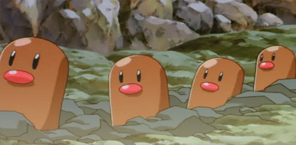
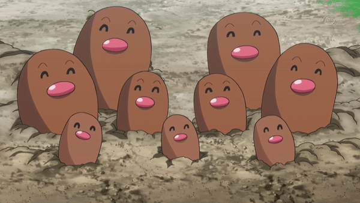

Como características adaptativas, têm o hábito noturno, e também uma camada de muco na pele,
essas adaptações evitam com que a minhoca fique exposta ao ressecamento.
Se baseia em um sistema de regulação osmótica, a partir disso conseguem promover o equilíbrio de sais e água do organismo, isto é, a manutenção da homeostasia através da regulação da pressão osmótica interna dentro de certos limites, independentemente da concentração do meio externo.
A movimentação das minhocas funciona a partir de seus anéis, cada um composto por uma musculatura, assim possibilitando sua movimentação, a minhoca alonga uma parte do corpo e encurta outra, movimento sucessivo chamado de "alongar-encurtar". Geralmente as minhocas não possuem um grande sistema de defesa, porém possuem hábitos noturnos, e geralmente se camuflam em buracos no subsolo.
O sistema circulatório se baseia em um sistema fechado: dois vasos sanguíneos principais, um desses vasos é a artéria ventral, que passa o sangue oxigenado para diferentes órgãos, e o outro vaso é o dorsal, que leva de volta o sangue para os pares de corações da minhoca. O sistema nervoso da minhoca é constituído por gânglios cerebrais, um cordão nervoso ventral que vai até o ânus da minhoca, e um par de gânglios por segmento.
As minhocas são hermafroditas. Por terem os dois sexos, elas conseguem se fecundarem e serem fecundadas ao mesmo tempo, porém é necessário a presença de um parceiro. Esse processo chama-se de fecundação cruzada, que pode durar cerca de 3 horas e gera cerca de 1 um casulo cheio de ovos, que se desenvolvem e deles saem minhocas jovens, que não passam por estágio larval, caracterizando o que se chama de desenvolvimento direto. As minhocas podem repetir diversas vezes esse processo no ano, e não possuem época certa para a reprodução.
Na inspiração em desenhos animados, citamos o Pokémon Diglett:
Se baseia em um sistema de regulação osmótica, a partir disso conseguem promover o equilíbrio de sais e água do organismo, isto é, a manutenção da homeostasia através da regulação da pressão osmótica interna dentro de certos limites, independentemente da concentração do meio externo.
A movimentação das minhocas funciona a partir de seus anéis, cada um composto por uma musculatura, assim possibilitando sua movimentação, a minhoca alonga uma parte do corpo e encurta outra, movimento sucessivo chamado de "alongar-encurtar". Geralmente as minhocas não possuem um grande sistema de defesa, porém possuem hábitos noturnos, e geralmente se camuflam em buracos no subsolo.
O sistema circulatório se baseia em um sistema fechado: dois vasos sanguíneos principais, um desses vasos é a artéria ventral, que passa o sangue oxigenado para diferentes órgãos, e o outro vaso é o dorsal, que leva de volta o sangue para os pares de corações da minhoca. O sistema nervoso da minhoca é constituído por gânglios cerebrais, um cordão nervoso ventral que vai até o ânus da minhoca, e um par de gânglios por segmento.
As minhocas são hermafroditas. Por terem os dois sexos, elas conseguem se fecundarem e serem fecundadas ao mesmo tempo, porém é necessário a presença de um parceiro. Esse processo chama-se de fecundação cruzada, que pode durar cerca de 3 horas e gera cerca de 1 um casulo cheio de ovos, que se desenvolvem e deles saem minhocas jovens, que não passam por estágio larval, caracterizando o que se chama de desenvolvimento direto. As minhocas podem repetir diversas vezes esse processo no ano, e não possuem época certa para a reprodução.
Na inspiração em desenhos animados, citamos o Pokémon Diglett:


 Próximo animal:
Próximo animal: